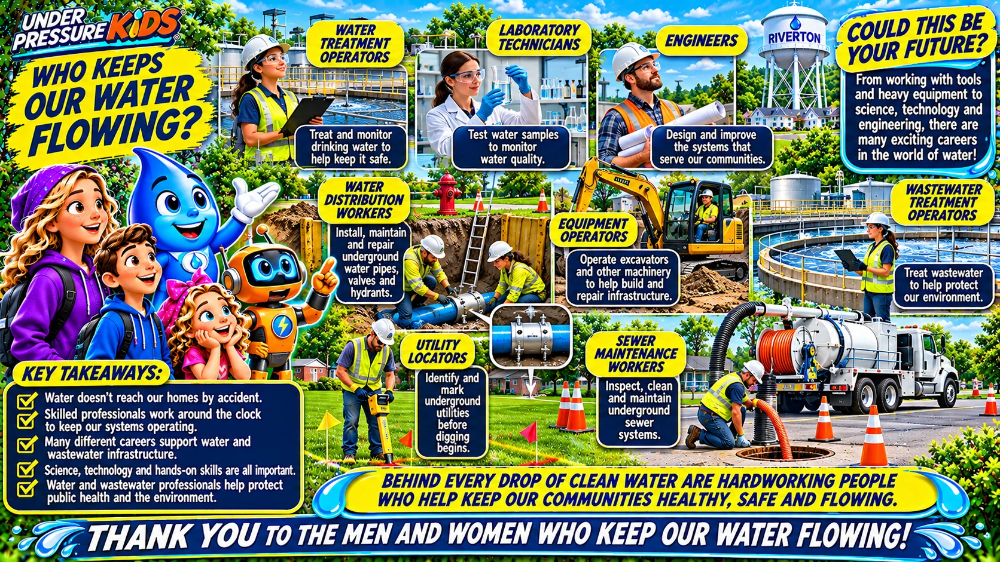

Who Keeps Our Water Flowing?

Piper, Max and Mia watched a utility crew finishing a water pipe repair in Riverton.
“Who takes care of all the water pipes in our town?” Mia asked.
Drip explained that it takes an entire team of hardworking people to keep Riverton running.
The People Behind Your Water
Every time you turn on a faucet, you're depending on people you may never meet.
Water treatment operators help make sure your drinking water is safe.
Utility workers install, maintain and repair underground pipes, valves and fire hydrants.
Wastewater operators help clean used water and protect our environment.
Many Jobs, One Mission
Keeping water flowing takes people with many different skills.
Equipment operators dig trenches. Mechanics repair machinery. Engineers design water systems. Laboratory technicians test water, and utility locators help find underground pipes and cables.
Everyone has an important job!
Working Around the Clock
Water emergencies don't always happen during regular working hours.
Sometimes crews leave their homes in the middle of the night to repair broken pipes.
They work in the summer heat, winter cold and pouring rain to help keep our communities running.
Could You Be a Water Hero?
Do you enjoy solving problems like Piper?
Do you love big machines like Max?
Are you interested in building things like Bolt, exploring like Drip or asking questions like Mia?
There are many exciting careers in the world of water. Someday, you might help keep your own community running!
Did You Know?
Many water and wastewater facilities operate 24 hours a day, 365 days a year, even on holidays!
Your Next Discovery
The next time you see a water utility worker, give them a friendly wave from a safe distance.
They're part of the team that helps make everyday life possible.
Keep exploring! There's an amazing world beneath your feet.
Related discoveries
- Why Do Workers Wear Hard Hats?
- How Do Workers Fix Broken Water Pipes?
- Where Does Your Water Come From?